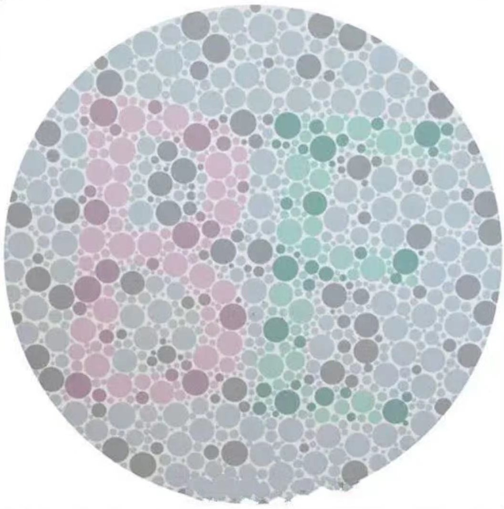

<!doctype html>
<html lang="zh-CN">

<head>
  <meta charset="utf-8">
  <meta name="viewport" content="width=device-width, initial-scale=1">
  <title>Experiment</title>

  <script src="jspsych-7.0//plugins/jspsych.js"></script>
  <script src="jspsych-7.0//plugins/plugin-html-keyboard-response.js"></script>
  <!-- <script src="https://www.naodao.com/public/experiment/libs/plugin/plugin-categorize-html.js"></script> -->
  <!-- <script src="https://unpkg.com/@jspsych/plugin-virtual-chinrest@2.0.3"></script> -->
  <script src="jspsych-7.0//plugins/plugin-html-button-response.js"></script>
  <script src="jspsych-7.0//plugins/plugin-virtual-chinrest.js"></script>
  <script src="jspsych-7.0//plugins/plugin-survey-text.js"></script>
  <script src="jspsych-7.0//plugins/plugin-rdk.js"></script>
  <script src="jspsych-7.0//plugins/plugin-preload.js"></script>
  <script src="jspsych-7.0//plugins/plugin-fullscreen.js"></script>
  <script src="jspsych-7.0//plugins/plugin-survey1.js"></script>
  <script src="jspsych-7.0//plugins/jspsych-staircase.js"></script>
  <!-- <script src="jspsych-7.0//plugins/staircase.js"></script> -->
  <!-- <script src="https://unpkg.com/@jspsych/plugin-call-function@1.1.3"></script> -->

  <link rel='stylesheet' href="jspsych-7.0//css/jspsych.css">
  <link rel="stylesheet" href="jspsych-7.0//css/survey.css">
  <style>
    .jspsych-display-element {
      font-size: 22px;
    };

    .jspsych-content {
      max-width: 80%;
    };
  </style>
</head>

<body>

  <!-- Load template experiment -->
  <script src="template_Expt/getThreshold.js"></script>
  <script src="template_Expt/move.js"></script>
  <script src="template_Expt/color.js"></script>

</body>

<script>

  let userId;
  let subjSex
  // 使用 window.location.search 获取查询字符串
  const queryString = window.location.search;
  // 使用 new URLSearchParams 解析查询字符串
  const urlParams = new URLSearchParams(queryString);
  // 获取参数值
  const testMode = urlParams.get('test')=="true"?true:false
  userId = parseInt(urlParams.get('id'));
  window.userId = userId
  console.log("userId: ", userId)

  if (testMode) {
    window.match_pract_mun = 1;
    window.rdk_pract_mun = 1;
    window.match_formal_mun = 1;
    window.rdk_foraml_mun = 1;
    window.pract_pass_rate = 0
  } else {
    window.match_pract_mun = 2;
    window.rdk_pract_mun = 2;
    window.match_formal_mun = 3;
    window.rdk_foraml_mun = 6;
    window.pract_pass_rate = 65
  }
  

  //---------initialize--------

  function saveJsonToFile(jsonData, filename) {
    // 将JSON对象转换为字符串
    const jsonString = JSON.stringify(jsonData);
  
    // 创建Blob对象，类型为application/json
    const blob = new Blob([jsonString], { type: "application/json" });
  
    // 创建一个链接元素用于下载
    const link = document.createElement("a");
    link.href = window.URL.createObjectURL(blob);
    link.download = filename.endsWith('.json') ? filename : `${filename}.json`;
  
    // 模拟点击下载
    document.body.appendChild(link);
    link.click();
  
    // 清理：移除链接并释放创建的URL对象
    document.body.removeChild(link);
    window.URL.revokeObjectURL(link.href);
  }

  var jsPsych = initJsPsych({
    on_finish: function () {
      jsPsych.data.get().localSave('csv', `pilot_expt_0421_${userId}.csv`);
      saveJsonToFile(coherence_output, `pilot_expt_0421_coherence_${userId}.json`);
    },
    default_iti: randomInteger(300, 1000),
  });

  // the body of the experiment

  var main_timeline = [];

  var preload = {
    type: jsPsychPreload,
    images: ["img//card.png", "img//color_blindness.jpg"],
    auto_preload: true
  };

  var fullScreen = {
    type: jsPsychFullscreen,
    fullscreen_mode: true,
    message: "<p>实验需要全屏模式，实验期间请勿退出全屏</P>",
    button_label: " <span class='add_' style='color:black; font-size: 20px'> 点击这里进入全屏</span>",
    data: {
      part: "fullScreen"
    },
  };


  //---------Create instructions---------

  var beginning = {
    type: jsPsychHtmlKeyboardResponse,
    stimulus: `
      <div style="text-align: left; color: white">
        <h3 style="text-align: center; font-size: 30px; margin: 0;">欢迎参与本实验</h3>
          <p>为充分保障您的权利，请确保您已经知晓并同意《参与实验同意书》以及《数据公开知情同意书》，</p>
          <p>如果您未见过上述内容，请咨询实验员 ，</p>
          <p>如果您选择继续实验，则表示您已经清楚两份知情同意书的内容并同意 。</p>
          <p>在整个实验中，您需要完成两项任务，具体的任务要求会在后面说明 ，</p>
          <p>请按空格键进入实验</p >
      </div>`,
    on_start: function () {
      document.body.style.backgroundColor = "black";
      document.body.style.cursor = 'none';
    },
    response_ends_trial: true,
    choices: " ",
    data: {
      part: "instruction_beginning",
    }
  };

  var end = {
    type: jsPsychHtmlKeyboardResponse,
    stimulus: `
      <div style="text-align: center; color: black; padding: 20px; font-size: 35px">
        <p>您已完成实验，按下空格或 5 秒后自动退出</p >
      </div>
      `,
    trial_duration: 5000,
    fullscreen_mode: false,
    response_ends_trial: true,
    choices: " ",
    data: {
      part: "instruction_end"
    },
  };

  //---------Create VirtualChinrest---------

  var card = {
    type: jsPsychVirtualChinrest,
    blindspot_reps: 3,
    resize_units: "cm",
    pixels_per_unit: 50,
    item_path: "img//card.png",
    adjustment_prompt: `
      <p> <span style="color: red">为了确保研究中的刺激以预期尺寸呈现，请您认真完成以下步骤。</span> </p>
      <p>这是一个标准的屏幕校对程序，不涉及任何数据的收集。</p> 
      <p>请您用一张与银行卡大小相匹配的物品，可以是银行卡或身份证，关键是物品的尺寸与标准银行卡尺寸相同。</p> 
      <p>请单击并拖动图像的右下红角，直到它与您的卡片精准匹配。</p>
      <p> 如果对以上操作感到困惑，请参考这个视频： <a href='https://www.naodao.com/public/stim_calibrate.mp4' target='_blank' style='font-size:24px'>参考视频</a></p>
      <p>完成后单击“确认”按钮。</p>
    `,
    adjustment_button_prompt: `
      <button type="button" style="font-size: 18px; width: 100px; height: 50px;">确认</button>
    `,
    blindspot_prompt: `
      <p>现在我们将快速测量您的观看距离。</p>
      <p>请将左手放在空格键上, 用右手遮住右眼, 左眼盯着黑色方块。 请一直保持这个姿势。</p>
      <p>按下空格键后，红球会向左运动。当移动到一定距离时它会消失。球消失后请<span style="font-weight: bold">立即再次</span>按下空格键。</p>
      <p>当您准备好后，请按空格键开始。</p>
    `,
    blindspot_measurements_prompt: "剩余次数",
    viewing_distance_report: `
      <p>根据您的回答，您的观看距离为<span id='distance-estimate' style='font-weight: bold;'></span></p>
      <p>这个距离是否正确？</p>
    `,
    redo_measurement_button_label: `
      <button type="button" style="font-size: 18px; width: 100px; height: 50px;">再试一次</button>
    `,
    blindspot_done_prompt: `
      <button type="button" style="font-size: 18px; width: 100px; height: 50px;">是的</button>
    `,
    data: {
      part: "jsPsychVirtualChinrest"
    }
  };
      
  var resized_stimulus = {
    type: jsPsychHtmlButtonResponse,
    stimulus: `
      <p>如果之前的测量正确, 在保持您现在的观看距离下, 下面的黑色正方形边长应为<span style='font-weight: bold;'>10 cm</span>。</p>
      <div style="background-color: black; width: 500px; height: 500px; margin: 20px auto;"></div>
    `,
    choices: [ `<button type="button" style="font-size: 18px; width: 100px; height: 50px;">继续</button>` ],
    data: {
      part: "jsPsychVirtualChinrest"
    }
  };

  //---------collecte perticipent's information---------

  const information = {
    type: jsPsychSurvey,
    survey_json: {
      showQuestionNumbers: true, title: "请填写基本信息", completeText: "提交",
      elements: [
        {
          type: "radiogroup",
          title: "性别",
          choices: ["男", "女"],
          isRequired: true,
          showNoneItem: false,
          showOtherItem: false,
          colCount: 0,
          name: "sex"
        },
        {
          type: 'text',
          title: "年龄",
          name: "age",
          isRequired: true,
          inputType: "number",
          min: 0,
          max: 100
        },
        {
          type: "radiogroup",
          title: "利手或惯用手",
          choices: ["左", "右"],
          isRequired: true,
          showNoneItem: false,
          showOtherItem: false,
          colCount: 0,
          name: "hands"
        },
        {
          type: "radiogroup",
          title: "是否为色盲或色弱",
          choices: ["色盲", "色弱", "都不是", "不确定"],
          isRequired: true,
          showNoneItem: false,
          showOtherItem: false,
          colCount: 0,
          name: "color_blindness"
        }
      ]
    },
    data: {
      part: "survey"
    },
    on_finish: function (data) {
      window.subjSex = data.response.sex; 
      console.log("subjSex:", window.subjSex)
    }
  };

  var color_test = {
    type: jsPsychSurveyText,
    preamble: `</img>`,
    questions: [
      { prompt: '请在方框内输入你从上图中看到的字母（可以不区分大小写），如果没有看见任何字母，请输入“none”', rows: 2 }
    ],
    button_label: "提交",
    data: {
      part: "color_test"
    },
    on_finish: function (data) {
      console.log("输入的字母：", data.response)
    }
  };

  const survey_isMatch = {
    type: jsPsychSurvey,
    survey_json: {
      showQuestionNumbers: true,
      title: "请回答以下问题",
      completeText: "提交",
      elements: [],
    },
    data: {
      part: "survey_isMatch",
    },
    on_finish: function (data) {
      console.log("匹配问题的选择：", data.response)
    },
    on_start: function () {
      document.body.style.backgroundColor = "white";
      document.body.style.cursor = 'default';
      //survey_isMatch.survey_json.elements[0].choices[1] = `${labelVar}`
    }
  };

  // 根据 id 的值设置 elements  // 这里好像不需要那么复杂？后面改改
  if (userId <= 20) {
    survey_isMatch.survey_json.elements = [
      {
        type: "radiogroup",
        title: "散点图整体向左运动代表",
        choices: ["我", "TA"],
        isRequired: true,
        showNoneItem: false,
        showOtherItem: false,
        colCount: 0,
        name: "move_left",
      },
      {
        type: "radiogroup",
        title: "散点图整体向右运动代表",
        choices: ["我", "TA"],
        isRequired: true,
        showNoneItem: false,
        showOtherItem: false,
        colCount: 0,
        name: "move_right",
      },
    ];
  } else {
    survey_isMatch.survey_json.elements = [
      {
        type: "radiogroup",
        title: "散点图整体为红色代表",
        choices: ["我", "TA"],
        isRequired: true,
        showNoneItem: false,
        showOtherItem: false,
        colCount: 0,
        name: "color_red",
      },
      {
        type: "radiogroup",
        title: "散点图整体为蓝色代表",
        choices: ["我", "TA"],
        isRequired: true,
        showNoneItem: false,
        showOtherItem: false,
        colCount: 0,
        name: "color_blue",
      },
    ];
  }

  //分配不同的组别

  var group_move = {
    timeline: [move],
    conditional_function: function () {
      if (userId <= 20) {
        console.log("move");
        return true;
      } else {
        return false;
      }
    }
  };

  var group_color = {
    timeline: [color],
    conditional_function: function () {
      if (userId > 20) {
        console.log("color");
        return true;
      } else {
        return false;
      }
    }
  };

  var assign_group = {
    timeline: [group_move, group_color
    ],
  };


  //---------整个实验的时间线---------

  main_timeline = [preload, fullScreen,  //card, resized_stimulus, 
    information, color_test, 
    beginning, 
    getThreshold, 
    assign_group, 
    survey_isMatch, end]

  jsPsych.run(main_timeline);

</script>

</html>